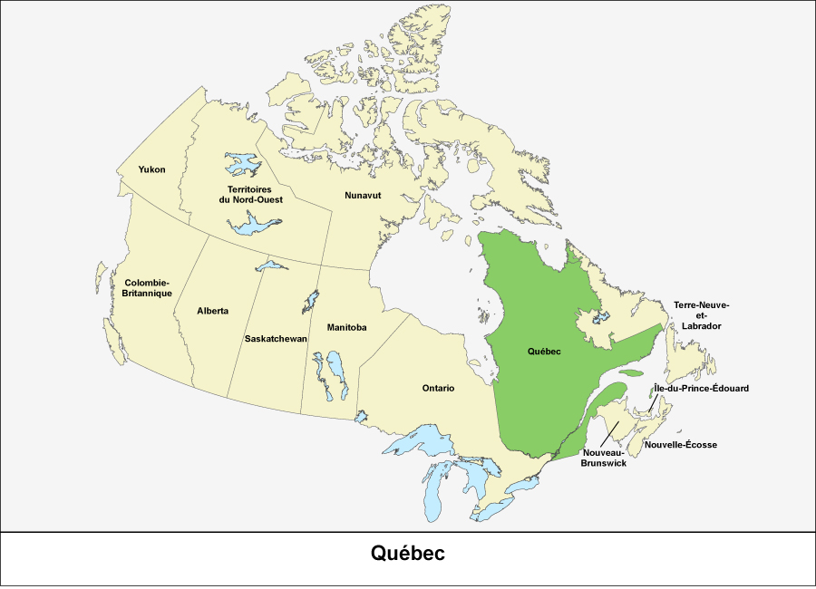

Découvrez Québec
Située sur les rives du fleuve Saint-Laurent, Québec est l'une des plus anciennes villes d'Amérique du Nord. Avec son riche patrimoine historique et culturel, ses paysages pittoresques et son atmosphère chaleureuse, Québec est une destination incontournable.

Pétite histoire du Québec
|
Québec est une ville située sur le fleuve Saint-Laurent, dans la province canadienne essentiellement francophone de Québec. Fondée en 1608, elle comprend un centre colonial fortifié, le Vieux-Québec et la place Royale, avec des bâtiments en pierre et des rues étroites. Ce quartier abrite également l'hôtel Château Frontenac et l'imposante Citadelle de Québec. Les rues pavées du Petit-Champlain sont bordées de bistrots et de boutiques. |
 |
Personnalités publiques
|
François Legault |
Bruno Marchand |
Blanchet, Yves-François |
Blanchette-Joncas, Maxime |
|
Brunelle-Duceppe, Alexis |
Louise Chabot |
Michael Sabia |
René Dufresne |